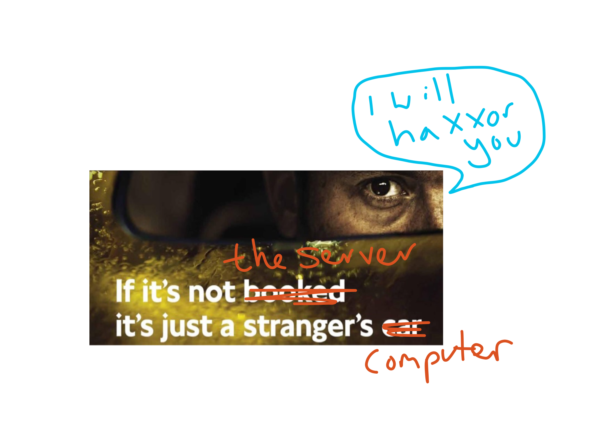
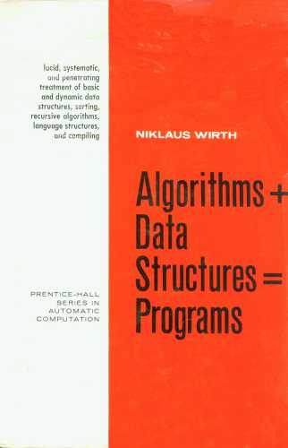

Full-stack Javascript
The goal
Enabling you to build full-stack apps with Javascript
Structure
- Day one: frontend
- Full stack overview
- Javascript-powered rich UIs
- AngularJS
- Day two: backend
- Node
- MEAN
- Building a full-stack application together
Installing etc
- install node
- (Windows only) install git-bash
- clone/download github.com/timruffles/full-stack-js-class
- navigate to the place you cloned, and
npm install
Full stack
AKA 'back- and front-end'
Theory first
Nah
An ounce of practice is generally worth more than a ton of theory.
Exercise
exercises/first-full-stack
npm start
- Open network - no response
- Look at TODOs in app/server.js
- Look at TODOs in public/app.js
Saga of web-page
URL bar
DNS
- Which computer (server) am I trying to talk to?
- Domain name to IP address
IP
- IP = internet protocol
- TCP = transmission control protocol
- TCP makes IP reliable
We've got the IP
# play along at home with curl -v google.com
About to connect() to app.com/funny/122 port 80 (#0)
Trying 62.253.72.148...
Connected to google.com (62.253.72.148) port 80 (#0)
HEAD /funny/122 HTTP/1.1
User-Agent: curl/7.30.0
Host: app.com
Accept: /
HTTPS?
- transport layer - outside world only sees IP addresses etc
HTTP arrives
- if HTTPS, after decryption
Application server
- server: as it sounds, provides nice things like GIFs
- just a computer
- reads ('parses') the HTTP request
Reading HTTP
- HTTP 1.x is plain text!
- we use path, domain and query string to interpret what we need to serve up
HEAD / HTTP/1.1
User-Agent: curl/7.30.0
Host: google.com
Accept: /
Response
- Application decides - do I have anything to reply with?
- If so, send back whatever is asked for
HTML page
- First request/response likely HTML
<!doctype html>
<link href="style.css" rel="stylesheet">
<img hover-to-play-gif src="content/funny/122.jpg">
<script src="app.js"></script>
Client (browser)
- Parses HTML, turns into DOM tree
- Requests all blocking stylesheets and scripts
- Requests images and other non-embedded content (videos, audio etc)
Rendering
- With HTML + CSS, renders DOM tree to screen
- Invokes blocking Javascript at each point it's found in tree
Javascript
- Still only virtual machine in browsers
- Makes single web pages an interactive application platform
- Without JS, behaviour has to be via links and new HTTP requests
AJAX
- Continues communicate with server while staying on same HTML page
- Makes web pages into 'thick clients'
Server
- 'Your' computers
- Storage, trust, collaboration
Storage
- Computer stays online
- Data stays around
Trust

Saga
- DNS = which computer
- TCP/IP = transport
- HTTP = what do you want?
- HTML + CSS = pretty pictures
- JS + AJAX = keeps the party going
- Server: trust, persistence, collaboration
Front to back
- Learn solid 'core' JS along the way
Front-end
- HTML/CSS/JS served by server
- JS + JSON, with JS templating
- OR both!
You know HTML/CSS
JS is where it gets tricky
GUI development
Tough
So mostly use frameworks
But first!
Radical Javascript
Rad · i · cal
relating to the fundamental nature of something
Our tools
- developer tools
console.log("hello");
Variables
var x = "howdy";
var iAmUndefined; // please note: JS is camelCase
Functions
The root
A function
Why so important?
Establishing new languages is a powerful strategy for controlling complexity in engineering design
Two ways of defining
function add(a, b) {
return a + b;
}
var fn = function() {};
Hoisting = great
main(document.querySelector("#something"));
function main(el) {
var val = otherThing(el);
}
function otherThing() {
someHelper();
// other details...
}
// more boring helpers...
First-class
First class: use wherever you can use other values
Callbacks
setTimeout(callMeLater, 250, "from the past");
function greet(whereFrom) {
console.log("greetings %s!", whereFrom);
}
Closures
// functions are closures!

Context
We can see variables in functions that wrap us (red)
Privacy
We can't see variables from inner functions (blue)
var scope
var is scoped to closest enclosing function: that is the only rule.
Same with function definitions.
Coding interview spoiler
var elements = document.querySelectorAll("button");
// What is wrong here?
for(var i = 0; i < elements.length; i++) {
var element = elements[i];
element.addEventListener("click", function() {
console.log(element.innerHTML);
});
}
Guru notes
// you can return functions from functions!
var adder = createAdder();
adder(10); // 10
adder(5); // 15
function createAdder() {
var n = 0;
return function(m) {
return n += m;
}
}
Comparison
Yes == has issues
So just use ===
The ONE time to use ==
JS loves nothing
var a = null;
var b;
// two types of nothing!
Data-structures

Two types
Ordered
Array
Array
Key-value
Objects, used as dictionaries
var enToFr = {};
enToFr.hello = "bonjour";
console.log(enToFr["hello"]);
Statements
if
var surprised = false;
if(surprised) {
console.log("You are problably new to coding");
} else {
console.log("Yay! If works as expected");
}
for
for(var i = 0; i < 10; i++) {
console.log(i);
}
for(var el = document.querySelector("#deep");
el.parentElement;
el = el.parentElement) {
}
// quiz: what is el going to be?
Objects
Alan Kay
I thought of objects being like biological cells or computers on a network, only able to communicate with messages
In other words
Little units of code + data, that communicate to solve problem
Bullet-proof objects in JS
var account = BankAccount(50);
account.deposit(5);
account.balance() // 5;
function BankAccount(balance) {
var self = {};
self.deposit = function(n) {
if(balance + n < 0) {
throw new Error("you don't have an overdraft!");
}
balance += n;
}
self.balance = function() {
return balance;
}
return self;
}
One way
Many ways to do objects in JS.
Frameworks
Why?
- Eliminiate common tasks
- Consistency - great for teams
Common features
- Validation
- Persistence
- Rendering
- Sychronising data with display
- Structure
Landscape
- complete: Ember, Angular
- minimal: Backbone
- libraries (build you own framework with these): React